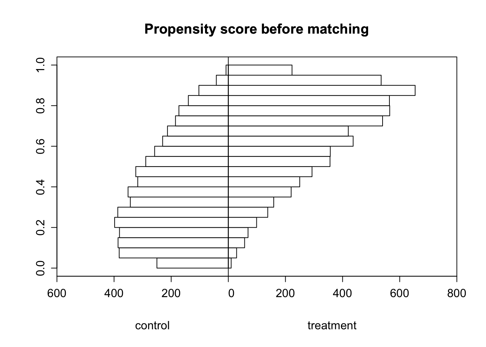

Code
# Import packages
library(tidyverse)
library(plm)
library(lmtest)
library(estimatr)
library(Hmisc)
library(RItools)
library(MatchIt)
library(knitr)
library(kableExtra)From 1990 to 2012, what was the average treatment effect on the treated (ATT) and average treatment effect (ATE) of implementing an Individual Transferable Quota (ITQ) on the share of years that a fishery was collapsed? For our purposes, “collapsed” is defined as harvest being more than 10% below maximum recorded harvest.
According to a 2020 article published in the journal Marine Policy, Individual Transferable Quotas (ITQs) involve the allocation of shares or portions of a total allowable catch (TAC) to individual fishers, vessels, communities or others with an interest in the fishery, such as processors. A number of fisheries around the world have introduced ITQs as a way to regulate fisheries in a sustainable manner, preserving important natural resources while also allowing for increased economic productivity.
We will use synthetically generated data to simplify things for our purposes (i.e., our data is fake so our results will have no real implications). Our data contains the variables on 11,135 hypothetical fisheries (only cross sectional, no time observations). These fisheries were either regulated by an Individual Transferable Quota (ITQ) for all years between 1990 and 2012 or in none of those years.
The outcome and treatment variables are:
COLL_SHARE = share of years a fishery is collapsed between 1990 and 2012 (collapse defined as harvest being more than 10% below maximum recorded harvest).
ITQ = dummy variable indicating ‘treatment’ with an ITQ (equal to 1 if the fishery has been regulated by an ITQ and 0 otherwise).
The control variables are:
MET1, MET2, ….MET6 = Dummy variables indicating to which Marine Ecosystem Type (MET) the fishery belongs to (coral reefs, kelp forests, seagrass meadows, open ocean, deep sea, mangrove forests). This type does not change over the relevant time period and does not depend on human influence.
IND_SR = Index of species richness in 1980 with values between 0 and 100 indicating the biodiversity with respect to species in the fishery. Bounds of 0 and 100 are the lowest and highest observed values of species diversity across all fisheries in 1980, respectively.
COMM_VAL = Commercial value of fisheries in 1980 in million US-$
# Import packages
library(tidyverse)
library(plm)
library(lmtest)
library(estimatr)
library(Hmisc)
library(RItools)
library(MatchIt)
library(knitr)
library(kableExtra)## Load Data
fisheries_df <- read.csv(here::here("data", "2024-3-11-post-data", "final_fisheries_data.csv"))
## Prepare Data
# Change all column names to lowercase
colnames(fisheries_df) <- tolower(colnames(fisheries_df))# Create MET column
fisheries_df <- fisheries_df %>%
mutate(met = case_when(
met1 == 1 ~ 1,
met2 == 1 ~ 2,
met3 == 1 ~ 3,
met4 == 1 ~ 4,
met5 == 1 ~ 5,
met6 == 1 ~ 6))
# Convert MET to factors
fisheries_df$met <- as.factor(fisheries_df$met)
# Aggregate data and negate count for control
fisheries_summary <- fisheries_df %>%
count(met, itq) %>%
spread(key = itq, value = n) %>%
gather(key = itq, value = 'count', -met) %>%
mutate(count = if_else(itq == '0', -count, count))
# Create histograms
ggplot(fisheries_summary, aes(x = met, y = count, fill = as.factor(itq))) +
geom_col() +
scale_y_continuous(labels = function(x) abs(x), limits = c(-2000, 2000)) +
coord_flip() +
labs(title = "Covariates comparison", x = "MET", y = "Count") +
scale_fill_brewer(palette = "Set2", name = "ITQ",
labels = c("0" = "control", "1" = "treatment")) +
theme_minimal()
Compared to fisheries in the control group (not regulated by an ITQ), fisheries in the treatment group (regulated by an ITQ) were less likely to be coral reefs or mangrove forests and more likely to be kelp forests, seagrass meadows, open ocean, or deep sea (these differences are particularly pronounced for open ocean and deep sea).
# Calculate mean difference for IND_SR
mean_diff_ind_sr <- mean(fisheries_df$ind_sr[fisheries_df$itq == 1]) - mean(fisheries_df$ind_sr[fisheries_df$itq == 0])
mean_diff_ind_sr[1] -8.825477# Mean difference t-test for IND_SR
t.test(ind_sr ~ itq, data = fisheries_df)
Welch Two Sample t-test
data: ind_sr by itq
t = 41.826, df = 10839, p-value < 2.2e-16
alternative hypothesis: true difference in means between group 0 and group 1 is not equal to 0
95 percent confidence interval:
8.411868 9.239086
sample estimates:
mean in group 0 mean in group 1
57.38515 48.55968 For species richness (SR) index in 1980, we reject the null hypothesis, at an alpha level of <0.001, that the difference in the mean SR index between the control (not regulated by an ITQ) and treatment (regulated by an ITQ) groups is zero. We estimate this mean difference to be about 8.83 index units (where the mean SR index is lower in the treatment group), and our 95% confidence interval for the mean difference is from 8.41 to 9.24 index units.
# Calculate mean difference for COMM_VAL
mean_diff_comm_val <- mean(fisheries_df$comm_val[fisheries_df$itq == 1]) - mean(fisheries_df$comm_val[fisheries_df$itq == 0])
mean_diff_comm_val[1] -32.34931# Mean difference t-test for COMM_VAL
t.test(comm_val ~ itq, data = fisheries_df)
Welch Two Sample t-test
data: comm_val by itq
t = 39.507, df = 9334.9, p-value < 2.2e-16
alternative hypothesis: true difference in means between group 0 and group 1 is not equal to 0
95 percent confidence interval:
30.74425 33.95437
sample estimates:
mean in group 0 mean in group 1
117.22839 84.87908 Regarding the commercial value of fisheries in 1980, we also reject the null hypothesis, at an alpha level of <0.001, that the difference in the mean SR index between the control (not regulated by an ITQ) and treatment (regulated by an ITQ) groups is zero. We estimate this mean difference to be about 32.35 million USD (where the mean commercial value is lower in the treatment group), and our 95% confidence interval for the mean difference is from 30.74 to 33.95 million USD.
For two of the covariates (SR index and commercial value), there are statistically significant differences between the treated and untreated groups. This indicates that there may be systemic differences between the pre-treatment ecosystem characteristics of fisheries that were regulated by an ITQ and those that were not, and if this is the case, simply controlling for all covariates is an insufficient method to estimate the ATE, since systemic differences means that there are differences between the groups that extend beyond what we can control for.
Because there seem to be systemic differences between the pre-treatment characteristics of the treated and untreated group, we will use the nearest neighbor matching estimator to estimate the ATT and the Weighted Least Squares (WLS) estimator to estimate the ATE.
# Estimation of propensity scores with the glm function and logit model
ps_reg <- glm(itq ~ met1 + met2 + met3 + met4 + met5 + ind_sr + comm_val,
data = fisheries_df, family = binomial())
# Attach the predicted propensity score to the data frame
fisheries_df$psvalue <- predict(ps_reg, type = "response")
# Drawing back to back histograms for propensity scores for treated and non-treated before matching
histbackback(split(fisheries_df$psvalue, fisheries_df$itq),
main = "Propensity score before matching", xlab = c("control", "treatment"), xlim = c(-600, 800))
There is some overlap in the distributions of our histograms, mainly for fisheries that have propensity scores between 0.4 and 0.6. I’m concerned about the lack of overlap for fisheries with high propensity scores, as this may lead to issues when we do nearest-neighbor matching. During nearest-neighbor matching, treated units are assigned to the non-treated unit with the closest propensity score as a match, and we want the resulting set of fisheries to have a great deal of overlap in their propensity scores to ensure a balance in covariates, since they are also likely to have an influence on our outcome variable. However, since there are very few fisheries in the control group with high propensity scores, I’m concerned that even after nearest-neighbor matching occurs, there will still be a lack of overlap in the distributions of our histograms.
## Nearest Neighbor Matching
# Match using nearest-neighbor approach (treated units are assigned the non-treated unit with the closest propensity score as match)
nn_matching <- matchit(itq ~ met1 + met2 + met3 + met4 + met5 + ind_sr + comm_val,
data = fisheries_df, method = "nearest", ratio = 1)
match_data = match.data(nn_matching)
## Estimate ATT
# Calculate sum of the differences of outcomes between matches
sumdiff_data <- match_data %>%
group_by(subclass) %>%
mutate(diff = coll_share[itq==1] - coll_share[itq==0])
sumdiff <- sum(sumdiff_data$diff)/2
# Divide sum of the difference by the number treated to generate ATT estimate
ATT_nn = sumdiff / sum(match_data$itq)
ATT_nn[1] -0.07132623Using the matched data, we estimate the average effect of an ITQ on a fishery that had an ITQ to be a 7.13 percentage-point decrease in the share of years between 1990 and 2012 where the fishery experienced collapse. This estimated effect size only applies to fisheries that were regulated by an ITQ because we only defined counterfactuals for these fisheries. Thus, our average outcome only demonstrates the effect of an ITQ on fishery collapse as it pertains to fisheries that were regulated by an ITQ.
## WLS Matching
# calculation of the weights (see slide 25 of lecture 5)
PS <- fisheries_df$psvalue
D <- fisheries_df$itq
# add weights to data frame
fisheries_df$wgt = (D/PS + (1-D)/(1-PS))
# run WLS regression
reg_wls <- lm(coll_share ~ itq + met1 + met2 + met3 + met4 + met5 + ind_sr + comm_val,
data = fisheries_df, weights = wgt)
## Estimate ATE
# Extracting the coefficients table
summary_reg <- summary(reg_wls)
summary_reg$coefficients %>%
kbl(caption = "WLS estimator") %>% # Generate table
kable_classic(full_width = FALSE)| Estimate | Std. Error | t value | Pr(>|t|) | |
|---|---|---|---|---|
| (Intercept) | 0.3748451 | 0.0030280 | 123.79136 | 0 |
| itq | -0.0766783 | 0.0009902 | -77.43563 | 0 |
| met1 | -0.1119518 | 0.0019244 | -58.17396 | 0 |
| met2 | -0.1285996 | 0.0022096 | -58.20071 | 0 |
| met3 | -0.0968933 | 0.0018096 | -53.54421 | 0 |
| met4 | -0.0634837 | 0.0022391 | -28.35257 | 0 |
| met5 | -0.0323470 | 0.0019230 | -16.82119 | 0 |
| ind_sr | -0.0014749 | 0.0000412 | -35.80433 | 0 |
| comm_val | 0.0003786 | 0.0000112 | 33.94403 | 0 |
Using the WLS estimator, we estimate the average effect of an ITQ on a fishery to be a 7.67 percentage-point decrease in the share of years between 1990 and 2012 where the fishery experienced collapse, with a standard error of 0.099 percentage-points. The very low p-value means we reject the null hypothesis that the average effect of an ITQ is zero at an alpha level of <0.001. Our estimated effect size, as calculated here, applies to all fisheries because we did not remove any fisheries from our sample, like we did when estimating effect size based on matching.
Our comparison of pre-treatment ecosystem characteristics showed that fisheries regulated with an ITQ between 1990 and 2012 had significant differences in Species Richness Index and commercial value compared to ones not regulated by an ITQ. For this reason, the treatment ignorability seemed like it would be a bad assumption to make, so we estimated propensity scores in order to calculate ATT using Nearest Neighbor Matching and ATE using the WLS estimator.
Using the matched data, we estimated the ATT to be a 7.13 percentage-point decrease in the share of years between 1990 and 2012 where the fishery experienced collapse. Then, using the WLS estimator, we estimated the ATE to be a 7.67 percentage-point decrease in the share of years between 1990 and 2012 where the fishery experienced collapse, with a standard error of 0.099 percentage-points.
Overall, our most useful finding here is the very low standard error when estimating ATE with the WLS estimator, indicating that we are 95% confident that the true ATE is between a 7.57 and 7.77 percentage-point decrease in share of years with a fishery collapse. In addition, the very low p-value corresponding to the low standard error means we reject the null hypothesis that the average effect of an ITQ is zero at an alpha level of <0.001.
@online{ghanadan2024,
author = {Ghanadan, Linus},
title = {Using Propensity Score Methods to Analyze the Impact of Catch
Shares Policy},
date = {2024-03-11},
url = {https://linusghanadan.github.io/blog/2024-3-11-post/},
langid = {en}
}